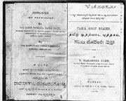

ತಮಿಳ ಮೊದಲ ಪುಸ್ತಕ
ತಮಿಳು-ಕನ್ನಡ ಸಾಮರಸ್ಯದ ತೊರೆ
-ಕೆ.ಎಸ್.ಮಧುಸೂದನ
ಆರಂಭದ ಪಾಠಗಳಲ್ಲಿ ತಮಿಳಿನ ವರ್ಣಮಾಲೆಯನ್ನು ತಮಿಳು ಲಿಪಿಯಲ್ಲಿ ನೀಡಿ ಅದಕ್ಕೆ ಸಂವಾದಿಯಾಗಿ ಕನ್ನಡ ಲಿಪಿಯಲ್ಲೂ ನಮೂದಿಸಿದ್ದಾರೆ. ಮುಂದಿನ ಪಾಠಗಳಲ್ಲಿ 12 ಸ್ವರಗಳು (ಉಯಿರೆಳುತ್ತು), 18 ವ್ಯಂಜನಗಳು (ಮೆಯ್ಯೆಳುತ್ತು) ಮತ್ತು ಗುಣಿತಾಕ್ಷರಗಳ ಕೋಷ್ಟಕ ನೀಡಿದ್ದಾರೆ.
ಧಾರವಾಡದ ಕರ್ನಾಟಕ ವಿದ್ಯಾವರ್ಧಕ ಸಂಘ ಪ್ರಕಟಿಸಿರುವ Tamil First Reader ಕೃತಿಯನ್ನು ವಿ.ನರಸಿಂಹ ಮೂರ್ತಿ ಎನ್ನುವವರು ಬರೆದಿದ್ದಾರೆ. ಈ ಕೃತಿ ಮದರಾಸಿನ ಎಸ್.ಪಿ.ಸಿ.ಕೆ ಪ್ರೆಸ್, ವೇಪೇರಿಯಲ್ಲಿ (1896ರಲ್ಲಿ) ಮುದ್ರಣಗೊಂಡಿದೆ. ಪುಸ್ತಕದ ಮೇಲೆ ಅಚ್ಚಾಗಿರುವಂತೆ ಇದು- ‘ಅನ್ಯರ ಸಹಾಯವಿಲ್ಲದೆ ಕನ್ನಡಿಗರಿಗೆ ತಮಿಳ ಜ್ಞಾನವಾಗುವ ಹಾಗೆ ಬರೆದಿರುವ ತಮಿಳ ಪುಸ್ತಕವು’.
‘ಈ ಪುಸ್ತಕವು ಧಾರವಾಡ ಟ್ರೇನಿಂಗ್ ಕಾಲೇಜಿನ ಪೆನಶನ್ನ ಹೊಂದಿದ ಪ್ರಿನ್ಸಿಪಾಲರೂ ಧಾರವಾಡ ಕರ್ನಾಟಕ ವಿದ್ಯಾವರ್ಧಕ ಸಂಘದ ಉಪಾಧ್ಯಕ್ಷರೂ ಆದ ರಾವ ಸಾಹೇಬ ವೆಂಕಟರಂಗೋ ಕಟ್ಟಿ ಇವರಿಗೆ ಕೃತಜ್ಞತೆಯಿಂದ ಧಾರವಾಡ ಕ.ವಿ.ವಿ. ಸಂಘದಿಂದ ಕಾಣಿಕೆಯಾಗಿ ಅರ್ಪಿಸಲ್ಪಟ್ಟಿರುತ್ತದೆ’ ಎನ್ನುವ ಉಲ್ಲೇಖವೂ ಪುಸ್ತಕದಲ್ಲಿದೆ.
ಲೇಖಕ ನರಸಿಂಹ ಮೂರ್ತಿ ಮೈಸೂರು ಜಿಲ್ಲೆಯ ತಿರುಮಕೂಡಲ ನರಸೀಪುರದ ಸರಕಾರಿ ಆಂಗ್ಲೋ-ವರ್ನಕ್ಯುಲರ್ ಶಾಲೆಯಲ್ಲಿ ಸಹಾಯಕ ಅಧ್ಯಾಪಕರಾಗಿದ್ದವರು. ಒಟ್ಟು 43 ಪಾಠಗಳಿಂದ ಕೂಡಿರುವ 126 ಪುಟಗಳ ಈ ಪುಸ್ತಕದಲ್ಲಿ ಎಲ್ಲಿಯೂ ಬೆಲೆಯನ್ನು ನಮೂದಿಸಿಲ್ಲ.
ಪುಸ್ತಕದ ರಚನೆಯ ಹಿಂದಿನ ಪ್ರೇರಣೆಯನ್ನು ಲೇಖಕರು ತಮ್ಮ ಪೀಠಿಕೆಯಲ್ಲಿ ತಿಳಿಸಿದ್ದಾರೆ. ಅದು ಹೀಗಿದೆ: ‘ಕನ್ನಡ ಭಾಷಾಭ್ಯಾಸಿಗಳಾದ ಈ ದೇಶದ ಜನರು ತಮ್ಮ ನೆರೆಯ ದೇಶದಲ್ಲಿ ಪ್ರಸಿದ್ಧಿಗೊಂಡಿರುವ ತಮಿಳು ಭಾಷೆಯನ್ನು ಅನ್ಯರ ಸಹಾಯವಿಲ್ಲದೆ ತಿಳಿದುಕೊಳ್ಳುವ ಸಾಧನವ್ಯಾವದೂ ಇಲ್ಲದಿರುವುದನ್ನು ಧಾರ್ವಾಡದ ವಿದ್ಯಾವರ್ಧಕ ಸಂಘದವರು ಮುಂಗಂಡು ಈ ಕೊರತೆಯನ್ನು ಹೋಗಲಾಡಿಸಲು ಯೋಗ್ಯವಾದಂಥ ಮೊದಲನೆಯ ಮತ್ತು ಎರಡನೆಯ ಪುಸ್ತಕಗಳನ್ನು ಬರೆದವರಿಗೆ ಐವತ್ತು ರುಪಾಯಿ ಇನಾಮು ದೊರೆಯುವುದೆಂದು ಪ್ರಕಟಿಸಿ ಪ್ರೋತ್ಸಾಹ ಪಡಿಸಿದರು.
ಅದನ್ನು ತಿಳಿದು ನಾನು ಈ ಪುಸ್ತಕಗಳನ್ನು ತಿಳಿದ ಮಟ್ಟಿಗೆ ಬರೆದು ಮುಗಿಸಿ ಧಾರವಾಡದ ಕ.ವಿ.ವಿ. ಸಂಘದ ಸನ್ಮಾನಿತ ಕಾರ್ಯದರ್ಶಿಗಳ ಕಡೆಗೆ ಕಳುಹಿಸಿಕೊಡಲಾಗಿ ಅವರು ಆ ಪುಸ್ತಕಗಳನ್ನು ಮೈಸೂರು ಸೀಮೆಯ ವಿದ್ಯಾಭ್ಯಾಸದ ಇಲಾಖಾ ಸೆಕ್ರೆಟರಿಯವರಾದ ಮೆ.ಹೆಚ್.ಜೆ. ಭಾಭಾ, ಎಂ.ಎ ಯವರ ಬಳಿಗೆ ಕಳುಹಿಸಿ ಅವುಗಳಲ್ಲಿರುವ ಗುಣದೋಷಗಳನ್ನು ವ್ಯಕ್ತಪಡಿಸಬೇಕೆಂದಪೇಕ್ಷಿಸಲು, ಅವರು ಕೊಟ್ಟ ಅಭಿಪ್ರಾಯದ ಮೇಲಿಂದ ಕೆಲವು ವ್ಯಾಕರಣ ನಿಯಮಗಳು ಪುನಹ ಸೇರಿಸಲಾಯಿತು. ಈ ಪುಸ್ತಕಗಳಲ್ಲಿ ತಮಿಳ ಶಬ್ದಗಳ ಉಚ್ಛಾರಣಾ ಕ್ರಮವೂ, ಭಾಷಾಂತರವೂ ಕನ್ನಡದಲ್ಲಿ ಬರೆಯಲ್ಪಟ್ಟಿರುವುದರಿಂದ ಕನ್ನಡ ಭಾಷೆಯನ್ನು ಕಲಿತವರೆಲ್ಲರೂ ತಮಿಳ ಭಾಷೆಯನ್ನು ಸುಲಭದಿಂದ ಕಲಿಯಲು ಅನುಕೂಲವಾಗಿರುವುದು’.
ಆರಂಭದ ಪಾಠಗಳಲ್ಲಿ ತಮಿಳಿನ ವರ್ಣಮಾಲೆಯನ್ನು ತಮಿಳು ಲಿಪಿಯಲ್ಲಿ ನೀಡಿ ಅದಕ್ಕೆ ಸಂವಾದಿಯಾಗಿ ಕನ್ನಡ ಲಿಪಿಯಲ್ಲೂ ನಮೂದಿಸಿದ್ದಾರೆ. ಮುಂದಿನ ಪಾಠಗಳಲ್ಲಿ 12 ಸ್ವರಗಳು (ಉಯಿರೆಳುತ್ತು), 18 ವ್ಯಂಜನಗಳು (ಮೆಯ್ಯೆಳುತ್ತು) ಮತ್ತು ಗುಣಿತಾಕ್ಷರಗಳ ಕೋಷ್ಟಕ ನೀಡಿದ್ದಾರೆ. ತಮಿಳಿನಲ್ಲಿ ಒಟ್ಟು ಗುಣಿತಾಕ್ಷರಗಳು 216. ಜ, ಸ, ಷ, ಹ, ಕ್ಷ- ಈ ಅಕ್ಷರಗಳು ಗ್ರಂಥಾಕ್ಷರಗಳಾದಾಗ್ಯೂ ತಮಿಳಿನಲ್ಲಿ ಉಪಯೋಗಿಸುವ ವಾಡಿಕೆಯಿದೆ ಎನ್ನುವ ಮಾಹಿತಿಯಿದೆ.
ಲವು ವಿಶಿಷ್ಟ ವರ್ಣಗಳ ಉಚ್ಛಾರಣೆಯನ್ನು ಕುರಿತು ಹೇಳುತ್ತಾ ರಳ’ ಎಂಬ ತಮಿಳು ಅಕ್ಷರವನ್ನು (ಹಳಗನ್ನಡದಲ್ಲಿದ್ದ ಈ ಅಕ್ಷರ ಹೊಸಗನ್ನಡದಲ್ಲಿ ಬಿಟ್ಟು ಹೋಯಿತು.) zsha ಎಂದು ಉಚ್ಛರಿಸಬೇಕೆಂದೂ, ತಮಿಳಿನ ಎರಡನೆಯ ವಿಶಿಷ್ಟ ‘ರ’ ಅಕ್ಷರ ಎರಡು ಸಲ ಬಂದಾಗ ‘ಟ್ರ’ ಎಂದು ಉಚ್ಛರಿಸಬೇಕೆಂದೂ ಸೂಚಿಸಿದ್ದಾರೆ. ತಮಿಳು ಭಾಷೆಯ ಪದಗಳ ಅಂತ್ಯದಲ್ಲಿನ ‘ಉ’ಕಾರವನ್ನು, ‘ಇ’ಕಾರಕ್ಕೂ ‘ಉ’ಕಾರಕ್ಕೂ ಮಧ್ಯಸ್ಥವಾಗಿ ಉಚ್ಛರಿಸಬೇಕು. ತಮಿಳಿನ ಕ್ರಿಯಾ ಪ್ರತ್ಯಯಗಳ, ಭಕ್ತಿ ಪ್ರತ್ಯಯಗಳ ಇವುಗಳ ಕೋಷ್ಟಕ ನೀಡಿ ನಂತರ ತಮಿಳು ಪದಗಳ, ಪದಪುಂಜಗಳ, ವಾಕ್ಯಗಳ ಮತ್ತು ವಾಕ್ಯಮಾಲೆಗಳನ್ನು ಕನ್ನಡ ಲಿಪಿಯಲ್ಲಿ ನೀಡಿ ಕನ್ನಡದ ಅರ್ಥದೊಂದಿಗೆ ವಿವರಣೆಯಿದೆ.
ಉದಾಹರಣೆ:ಪದ: ಅರಿಶಿ=ಅಕ್ಕಿ, ಯಾನೈ=ಆನೆಯು, ತುಂಬಿಕ್ಕೈ=ಸೊಂಡಿಲುಪದಪುಂಜ: ಉಪ್ಪು ನೀರ್ ಕುಳಂ=ಉಪ್ಪು ನೀರಿನ ಕೊಳವು. ವಾಕ್ಯ: ತಿರುಡನ್ ವೆಳ್ಳಿಕ್ಕಾಪ್ಪು ತ್ತಿರುಡಿನಾನ್=ಕಳ್ಳನು ಬೆಳ್ಳಿ ಕಡಗವನ್ನು ಕದ್ದನು.
ವಾಕ್ಯಮಾಲೆ: ಒರುವನ್ ಒರು ತೇಳ್ ನೆರುಪ್ಪಿಲ್ ವಿಳಪ್ಪೋಗಿರದೈಕ್ಕಂಡು ಅದೈ ನೆರುಪ್ಪಿಲ್ ವಿಳಾಮಲ್ ಎಡುತ್ತುಪ್ಪೋಟ್ಟಾನ್. ತೇಳ್ ಅಂದ ಉಪಘಾರಂ ತೆರಿಯಾಮಲ್ ಅವನುಡೈಯ ಕೈಯೈ ಕಡಿತ್ತುವಿಟ್ಟದು. ಅದಿನಾಲ್ ಅವನ್ ಮಿಘವುಂ ವರುತ್ತಪ್ಪಟ್ಟಾನ್. ಇಪ್ಪಡಿಯೇ ಇಡಕ್ಕುಕ್ಕಾರರ್ ಉಪಕಾರತ್ತಿರ್ಕು ಅಪಕಾರಂ ಶೆಯ್ವಾರ್ಘಳ್.
ಕನ್ನಡ ಅರ್ಥ: ಒಬ್ಬನು ಒಂದು ಚೇಳು ಬೆಂಕಿಯಲ್ಲಿ ಬೀಳಹೋಗುವುದನ್ನು ಕಂಡು ಅದನ್ನು ಬೆಂಕಿಯಲ್ಲಿ ಬೀಳದ ಹಾಗೆ ಎತ್ತಿ ಹಾಕಿದನು. ಚೇಳು ಆ ಉಪಕಾರ ತಿಳಿಯದೆ ಅವನ ಕೈಯನ್ನು ಕುಟುಕಿತು. ಅದರಿಂದ ಅವನು ಕಷ್ಟಪಟ್ಟನು. ಹೀಗೆ ದುಷ್ಟರು ಉಪಕಾರಕ್ಕೆ ಅಪಕಾರ ಮಾಡುವರು.
ದ್ರಾವಿಡ ಭಾಷಾವಂಶದಲ್ಲಿನ ಅತ್ಯಂತ ಪ್ರಾಚೀನ ಭಾಷೆಗಳಾದ ಕನ್ನಡ ಮತ್ತು ತಮಿಳು ಭಾಷೆಗಳೆರಡರ ಕಲಿಕೆಗೆ ಪರಸ್ಪರ ಅನುವಾಗುವಂತೆ ಇರುವ ಈ ಕೃತಿ ತೌಲನಿಕ ಅಧ್ಯಯನಕ್ಕೂ ಸಹಕಾರಿ.
ಭಾಷಾವಾರು ಪ್ರಾಂತ್ಯಗಳ ರಚನೆಯ ನಂತರ ಕಂಡುಬರುತ್ತಿರುವ ಇಂದಿನ ಭಾಷಾದ್ವೇಷದ ಹಿನ್ನೆಲೆಯಲ್ಲಿ, 116 ವರ್ಷಗಳಷ್ಟು ಹಿಂದೆಯೇ ರಚನೆಯಾಗಿರುವ ‘ತಮಿಳು ಫಸ್ಟ್ ರೀಡರ್’ ಭಾಷಾಸಾಮರಸ್ಯಕ್ಕೆ ಪೂರಕ ಎನ್ನುವಂತೆ ಕಾಣಿಸುತ್ತದೆ.